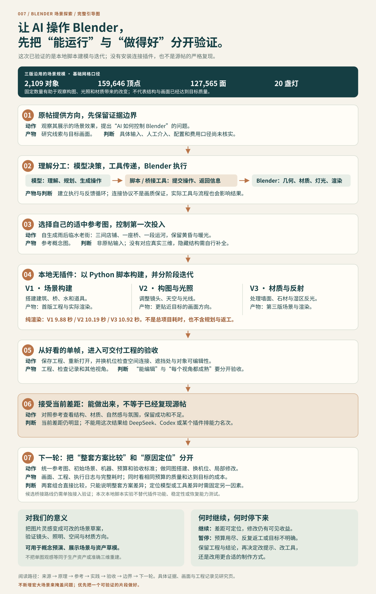

原 SVG 保持不变，记录源帖线索、工具分工、V1 至 V3 实践与当时的下一步判断，不包含后续 V4 和交互查看器。放大后可横向滚动；另可查看此前生成的原理与验证引导图原件，两图用途不同，分别保存。

历史图中的秒数只表示前三次正式渲染，不包含规划、脚本编写、预览、检查和修改，也未包含 V4。最新画面对比与证据边界见V4 对齐记录。没有 JavaScript 时，仍可阅读整图、单独打开或下载原图。